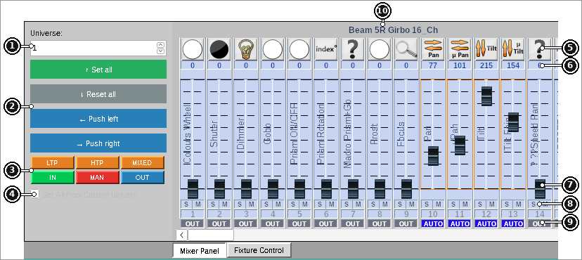

For: FullPlayer
The General Mixer button of the function bar shows or hides the mixer under the Live panel: the 512 channels of one universe as faders, grouped by fixture. Drag the line above it to make it taller or lower. Under it, Mixer Panel and Fixture Control switch between the mixer and Fixture Control (the Fixtures button).

The General Mixer with the first fixture of Andrei_edit. Cerc fata runs: its pan and tilt channels (10 to 13) read AUTO.
| 1 | Universe - the universe shown (1 to 16). |
| 2 | Set all - every channel of the universe to full; Reset all - every value to 0, without stopping any button and without changing OUT / MAN / IN; Push left, Push right - every value one channel to the left or to the right. |
| 3 | The settings of the channels (below): LTP, HTP, MIXED, IN, MAN, OUT. |
| 4 | Set All from Current Univers - gives the setting chosen at 3 to all the channels of the universe. |
| 5 | The picture of the channel, from the fixture's profile. For a channel with presets (colours, gobos ...), a click on it lists them: the one chosen sets the channel. |
| 6 | The value, 0 to 255. |
| 7 | The fader, with the name of the channel along it. Drag it, or click anywhere on its track. |
| 8 | S - full or nothing, held by hand (MAN): a channel under half goes to 255, the others to 0. M - link: the channels with M move together when one of them is dragged. |
| 9 | The state of the channel (below), with its number above it. |
| 10 | The fixture: its name over its channels. The faders of one fixture have one colour, those of the next fixture the other; channels of no fixture are grey. |
| State | What it means |
|---|---|
| OUT | The program's own output: the buttons and the faders set it. |
| AUTO | An OUT channel a running button drives now. |
| MAN | Held by hand at its value: the buttons do not change it. |
| IN | Taken from the DMX input (see DMX Hardware, DMX-IN). |
How the values of several buttons on one channel are put together: LTP - the latest wins, HTP - the highest value wins, MIXED - their average.
To change the setting of channels, press the setting at 3 (it stays pressed): a tick box appears on every channel,
ticked where the channel has it already. Tick the channels that must get it - or tick
Set All from Current Univers for all of them -, then press the setting again to finish. The
same works for IN, MAN and OUT. The commands setChMixMode and setChMode do it too (see
Commands).
Freeze (function bar) holds the light that goes out as it is now; pressed again, it lets it
go. The buttons go on running underneath. The command blackout switches all the output off and on again
in the same way; freeze is the command of Freeze.